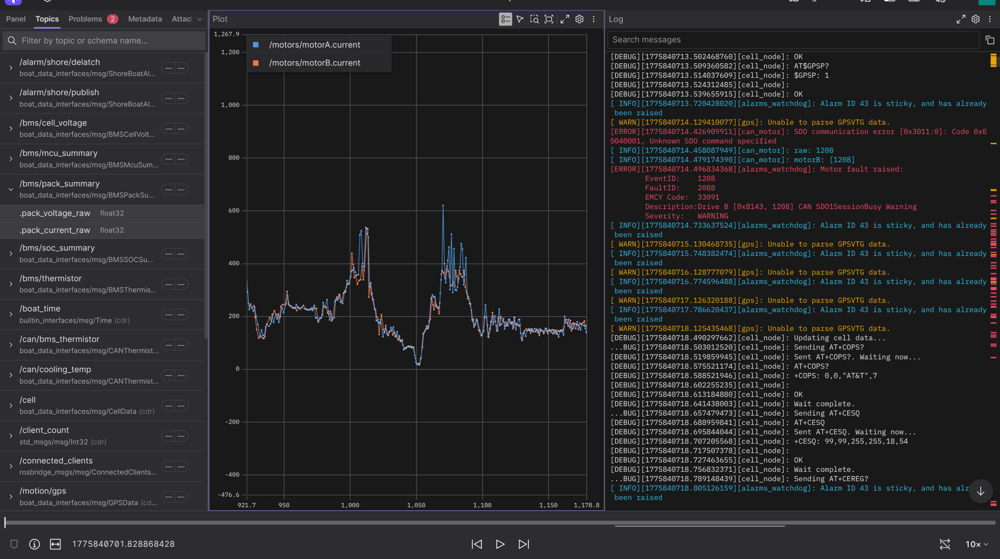

TidalCore
TidalCore is the core of the control system, and is responsible for handling shore up-link, CAN communications to the motor controller and battery management system, data logging, fault management, GPS communication, cellular configuration, and much more. All data from the boat originates from TidalCore, and the rest of the control system cannot function without it.
The goal of this article is to familiarize you with some of the key concepts and ideas, and also provide a context onto why specific choices were made. The actual setup/programming is located at [TODO].
Tip
This documentation mirrors the official ROS2 documentation about its architecture (duh, since we use ROS2). It is a good idea to read the official documentation on its basic concepts along with this one. You will be using ROS2 a lot, so it is best to get used to reading its documentation early.
Nodes¶
TidalCore is built with a distributed architecture that prevents single points of failures. This means that even if there is a single bad node which crashes, it does not result in the entire failure of the entire control system, a strict requirement for a system which cannot be easily debugged or rebooted once in the field (or the water).
This also drives our choice to use ROS2 (Robot Operating System). ROS2 works in a node architecture, which means that each portion of the control system (CAN communication, GPS, shore up-link, etc), are all separate "nodes" or processes. What this means is that if there is a failure in one node (e.g, a parsing bug in the GPS node results in a crash), it will not affect the other portions of the control system, such as CAN communication, shore up-link, etc. This is a much more robust design compared to a monolithic structure, where all of the code is sitting inside 1 process, and any failure in any part of the code will result in a full control system failure.
TidalCore currently has the following nodes:
- shore_comms/shore_comms_cpp - Ingests data from the other nodes and sends it to the shore system
- cell_node - Handles the configuration of the cellular hat and monitors the connection quality
- motion_node - Parses the NMEA strings from the SixFab GPS module from serial USB
- alarms_manager_node - Maintains list of active faults from internal database and handles raising and resolution of faults
- can_node/can_node_cpp - Communicates with the battery management system about current battery state, and receives CANOpen messages from both motor controllers
- sys_util_node - Monitors system utilization such as CPU usage, RAM, storage, etc
- time_node - Maintains a running clock for convenience purposes
Of these, the most important one is the can_node, since it manages the entire CAN subsystem, and has the most important information. Even if we lose the rest of the control system, the can node can function on its own, and it is critical that we be able to get data from it at all times.
Topics, Publishers, Subscribers¶
We now know that each node is an independent process, but how do nodes actually communicate with one another? In a typical program, you may have a class or object which holds this data, and can be read at any time, but it is not so simple when each node is an independent process. To facilitate data transfer, we use publishers and subscribers who write/read data from a topic.
A topic represents a data stream, which can be identified through a string. For example, we have topics such as /motors/motorA, /bms/cell_voltage, etc. You can think of nodes as places where data is actually exchanged, and nodes listen and write to topics in order to exchange data. Publishers and subscribers each write and read data that are in a topic.
Example
We have created a topic called called /motors/motorA (don't worry about the specifics). We will now have the can_node create a publisher for the topic, and we will have shore_comms create a subscriber for the topic.
Now, whenever the can_node recieves data from the motor controller, it will publish that data onto the topic. The shore_comms has a subscriber which is listening in for any data in the stream, and it therefore gets the data. It can now send that data to the shore system.
What makes this especially familizrepowerful is that you can have many subscribers and publishers. This is great for having 1 node publish data that multiple nodes may need, or having multiple nodes publish to a shared topic.
In our code, we typically only have 1 node publishing (e.g, can_node publishing motor controller data), and lots of subscribers (e.g, shore_comms subscribes to many topics in order to forward it to the shore system).
Info
There do exist other types of data interfaces (such as services and actions), but these are not used as commonly as publishers/subscribers, and it is recommended to read about them more in depth on the ROS documentation linked above.
"Test" Nodes¶
However, another feature of topics is that the subscriber does not actually care where the data is coming from. In our example, shore_comms doesn't know, nor care that the data originally came from the can_node. All that matters is that there is data in the topic.
We can use this to our advantage. Let's say that we are developing a new dashboard that reads data directly from the topics, but we don't have access to the real hardware. We would want to send fake data to test our dashboard, but it would normally require us to modify the real code to check if we are in a "testing" condition, and just send fake data, for example:
...
if self.is_testing:
send_fake_data()
else:
init_real_hardware() # Will cause an error/crash if we don't have the hardware!!!
...
This is quite annoying, since we now add a very consequential code path in an important part of the program.
Here is what we do instead:
We can create a fake "test node", whose only job is to send fake test data. Now, when we are testing the dashboard, instead of starting the "real" node, we start our test one instead. The test node will now send fake data, but our dashboard can't tell the difference. In this way, if I know it works with the test data, I can also for know for certain that it will also work with the real node connected to real hardware.
This is a pattern that you will see in many of the nodes. For example, can_node has a can_node_test which sends fake motor data (such as voltage, current, etc.) which we can use to validate our shore_comms node, TidalView (driver dashboard), etc.
Logging¶
We can now receive and send data between nodes and to the shore system. However, what good is data if we can never see it again? That is where logging comes in, and thankfully for us, we have a very important tool already created to work in the ROS ecosystem.
ROSBag is a tool which can record, store, and playback topics and other data interfaces. You simply start the program with a list of which topics you want to record (or record all of them!), and it will simply subscribe to every single topic, and record its data into a bagfile. This is a simple, but very powerful tool to log everything on the control system. TidalCore runs a script at startup which starts ROSBag before every node, allowing us to also observe startup behavior.
ROSBag outputs its file into a .mcap file type, and we upload and analyze these on a platform called Foxglove.

We can visualize, graph, and see logs of every single topic!
Playback¶
Playback of ROS2 bagfiles allow us to replay the control system in real-time based on historical data. Here a few examples of how it can be used:
- You have a math error in a function which takes in data from other parts of the control system. By replaying the inputs to that nodes, you can debug the function and figure out why the output is incorrect
- You can replay every topic and only start TidalShore and TidalView, which can allow you to visualize what happened in real-time from either the shore or drivers perspective
- Create new data based on old ROS data (such as applying filtering to some sensor data), and compare the results of before and after
Playback is typically less utilized compared to recording, since we now use Foxglove for analysis, but it still shows the potential of such a tool.
Summary¶
- Node - a single process that performs the actions for some subsystem, e.g, CAN communication. They can run independently and should have minimal dependencies (or gracefully adjust if a dependency dies)
- Topic - An identifiable data stream which you can either write or listen to
- Publisher - Publishes (or writes) data to a specific topic
- Subscriber - Subscribes to (or listens) for data from a specific topic